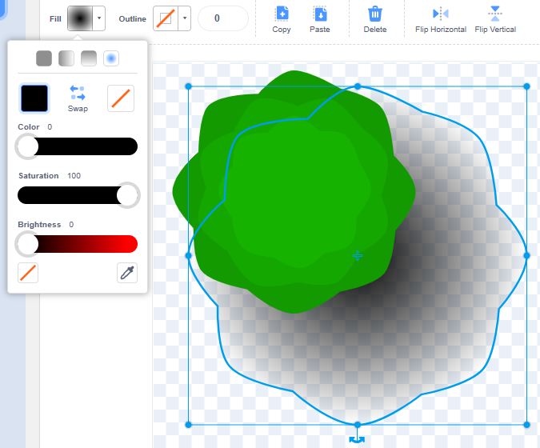
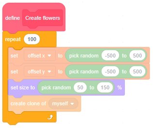
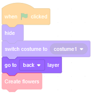

Introduction
Until now, our worlds in Scratch have been the same size as the stage. In this module we'll learn how to make a world that's infinitely big...
Hedgehog
The trick to making an infinitely big world is to keep your player in the centre of the stage, and to move the background around them. This is called a 'scrolling game' and you can have side-scrollers (where you view the player from the side and scroll left and right) or top-down scrollers (where you view your player from above and scroll up, down, left and right).
In this module we'll make a top-down scroller, and our player will be a hedgehog, because when you look at a hedgehog from above you can't see its legs move... that saves us having to animate (like we did in module 7).
Start from an empty Scratch project (rpf.io/scratch-new — remember to delete the cat sprite).
Paint the backdrop green.
Paint a new sprite, named 'Hedgehog'. Zoom in until the chequered background becomes large, then select the Circle tool, change the Fill colour to grey-brown, the Outline thickness to 0, and draw an ellipse, about 8 chequered squares by 6 chequered squares.
Snap this ellipse to the centre of the drawing area.
Select the Reshape tool, and squash in the right side of the ellipse:
Select the Circle tool again, change the colour to a lighter grey-brown, and draw a smaller ellipse for the head:
Send the head to the back by pressing the Back button:
Use the Reshape tool to 'pinch out' a snout:
Give the hedgehog some black eyes and a black nose. Both eyes should be identical, so you should make one, then use copy-and-paste (using Ctrl + C and Ctrl + V) to make the other:
Finally, use the Line tool to make some spikes. Draw a short black line, use the Reshape tool to bend it very slightly, then copy-and-paste it a few times. Rotate the spikes to follow the contours of the Hedgehog's back, like in the picture below:
Does your hedgehog look a bit like this?
Good. Switch to the code tab, and add some code that ensures our Hedgehog starts in the centre of the stage:
Create two variables, X and Y (for all sprites). They will track our Hedgehog's position, so set them to zero when the green flag is clicked:
Now add some code to listen for the arrow keys. However, don't change the Hedgehog's x and y position on the stage, instead change the X and Y variables:
Click the green flag and press some arrow keys. What happens?
If you look at the X and Y variables, you'll see that they change, even though the Hedgehog doesn't move around the stage. That's what we want!
However, it would be nice if the Hedgehog faced in the correct direction. Add some code to fix that:
Click the green flag and press some arrow keys. What happens?
Good. Let's walk around a tree.
Tree
Paint a new sprite, named 'Tree'. Zoom in until the chequered background becomes large, then select the Circle tool, change the Fill colour to dark green, the Outline thickness to 0, and draw a circle about three times bigger than the Hedgehog. Snap the circle to the centre of the drawing area.
Select the Reshape tool — you should see four 'points' on the edge of the circle:
You can select a point by clicking it, and you can add a new point by clicking on the circle's edge. Add four new points, one between each of the existing ones:
Now, add another new point between two of the existing points but, after you've added it, set its type to 'Pointed'...:
... and drag it slightly in towards the centre:
Repeat, seven times:
Now, select the Select tool, and copy-and-paste the shape we just made. Make its Fill colour a slightly lighter green and shrink it slightly (by dragging a corner of the bounding box).

Centre this smaller shape, and rotate it slightly, so that its 'bulges' line up with the 'indents' of the larger shape:
Make a third copy, slightly lighter again, slightly smaller, and rotated so that bulges and indents line up:
Finally, let's make something called a 'drop shadow'. Select the largest shape, copy-and-paste it, expand it slightly, set its Fill color to black and send it to the back. Now, adjust the Fill colour to give it a 'radial gradient' from black to transparent:
Does your sprite look like a tree seen from above?
Good. Switch to the Code tab and add the usual hide-template-show-clone blocks.
Create two variables offset x and offset y (for this sprite only). These will hold the position of the Tree (how far it is 'offset' from the centre).
Suppose the Hedgehog and the Tree start off 100 pixels apart. Then suppose that the Hedgehog moves 5 steps towards the Tree. In a previous module we might have moved the Hedgehog to 'x = 5' and kept the Tree at 'x = 100':
But notice how the Hedgehog and Tree are now 95 pixels apart? What if we just kept the Hedgehog at 'x = 0' and moved the Tree to 'x = 95'? That would create the illusion that the Hedgehog had moved towards the Tree:
Therefore the Tree should forever set its x position to offset x minus X. We do something similar for the y position too:
Click the green flag, then click the create clone of myself. What happens if you press the arrow keys?
Good. Let's add more trees.
Forest
We want to create lots of Tree clones, all with different positions. But do you remember (from Module 10) that a repeat loop would be slow to create the trees? What's the quicker way?
Create a new Block named 'Create trees' (run without screen refresh). In its definition, add a repeat 10 and nest a create clone of myself inside. Let the Block run when the green flag is clicked:
This script will create 10 clones all at the centre, but we want them to have different, random positions. Set each clone's offset x and offset y to a random number between -500 and 500. Also, set the size to a random percentage between 50 and 150:
Click the green flag and try to move around. Do you notice anything odd?
You might remember from Module 7 that the Scratch website, wanting to be helpful, stops you moving sprites off screen. But we want sprites to disappear off screen when we walk far enough away from them; we don't want them piling up against the edges. Good news — there's a trick for that.
If a sprite has a large costume, you can move it further from the centre before it disappears off screen. So, the trick is to:
- switch to a very big costume
- position the sprite where we want it
- switch back to the normal costume
Therefore, paint a new costume in the Tree sprite, naming it 'big'. Zoom out and draw a Rectangle that fills the drawing area:
In the Code tab, inside the forever loop that positions the Tree clones, switch to this big costume, then switch back (i.e. to 'costume1') after we've positioned it. Also make sure that the sprite starts with costume1, otherwise the block that sets the random size won't work (because, again, the Scratch website won't let you set a sprite's size bigger than the stage).
Click the green flag and try to move around. What happens?
Great. Time for some flowers.
Flowers
Duplicate the Tree sprite, naming it 'Flower'. In the Costumes tab, select costume1, press Ctrl + A to select everything, then hit delete — we need a clean drawing area for our flower.
Zoom in nice and close because the flower should be small — about two by two chequered squares. Draw a yellow circle in the middle, and six white circles for petals around it (using copy-and-paste to ensure they're identical):
Finally, add a drop shadow by drawing a new circle, about the size of the whole flower. Its Fill colour should be a radial gradient of black going to transparent at the edge. Send it to the back.
Does your sprite look like a flower seen from above?
In the Code tab, notice that all the scripts that created trees and positioned them correctly have been duplicated. This saves us some work.
However, the 'Create trees' block is misnamed, because it now creates flowers. In the 'My Blocks' section, right-click on 'Create trees' and click 'Edit'. Rename it to 'Create flowers'.
Let's make lots of flowers. Set the loop to repeat 100 times:
Click the green flag and move around. Do you notice anything odd?
When the trees floated over the top of the Hedgehog, it looked fine because trees are tall (in fact, I found it fun to move my Hedgehog into the shade of a tree). But flowers are short, so the Hedgehog should walk over them.
Add a go to back layer just before the Create flowers:
Click the green flag and move around. What happens?
Hedgehogs like to eat slugs. Let's turn this into a game.
Slugs
Duplicate the Flower sprite, naming it 'Slug'. In the Costumes tab, select costume1, press Ctrl + A to select everything, then hit delete.
Draw a long thin ellipse, about 8 chequered squares long, filled with a red-brown colour. Snap it to the centre. Use the Reshape tool to make the right end (the head) a bit fatter — you do this by selecting the right point and stretching out the point's 'handles':
Draw a smaller, orange-coloured ellipse for the 'mantle' — the bulging bit behind the head:
Finally, use the Line tool to draw some tentacles — two long, two short. They will look more natural if they're not quite symmetric:
Does your sprite look like a slug seen from above?
In the Code tab, rename 'Create flowers' to 'Create slugs'. Change the loop to repeat 30 times:

Let's make our slugs slither off in random directions. First, point them in a random direction:
Next, we need our slugs to change their offset x and offset y values so that they slither. How much should a slug's x position change if it moves 1 step in a random direction? Older kids will know that we need to use something called trigonometry; younger kids, just use the mysterious sin of and cos of blocks (grab the abs of block and click the dropdown) for now — you'll understand them better later:
If I travel 1 metre along some angle, the sin of that angle (short for sine and pronounced 'sine') tells me how far I moved in the x direction, and the cos of that angle (short for cosine and pronounced 'coz') tells me how far I moved in the y direction:
Click the green flag. What happens?
When the Hedgehog touches a Slug, it will eat it, so the Slug clone should be deleted:
Click the full screen button, click the green flag, and see how many slugs you can eat.
Next steps
Save your game. See if you can make it better.
Could you keep track of the number of slugs eaten?
Could you make the Hedgehog point diagnonally if a horizontal and a vertical arrow key were pressed at the same time?
Could you make the slugs change direction randomly?
What ideas can you come up with?
What did you think of this module?
I didn't like it

It was OK

I loved it